As new and long-duration energy storage technologies gain a larger share in the energy storage field, the consistency issue of energy storage batteries is becoming increasingly prominent. Consistency refers to the degree of matching between batteries of the same specifications and model in key parameters such as capacity, internal resistance, voltage, self-discharge rate, temperature characteristics, and degradation rate.
It is one of the core factors determining the performance, lifespan, and safety of battery packs. The consistency challenge currently facing the industry has transformed from an optional optimization to a critical issue that must be addressed. Especially in scenarios with extremely high requirements for safety and long lifespan, such as grid-side energy storage and new energy vehicles, the level of consistency control directly affects the system's economy and reliability.
The Multi-Dimensional Definition of Battery Consistency
In the engineering of lithium-ion battery packs, consistency refers to the convergence and sustained alignment of critical characteristic parameters among a group of cells. It is a relative concept; because no manufacturing process is perfect, the objective is to minimize the variance of these parameters within a strictly defined tolerance range. For high-quality energy storage development, consistency must be viewed through a lifecycle lens, encompassing initial states and the rate of divergence over thousands of operational cycles.
Primary Characteristic Parameters
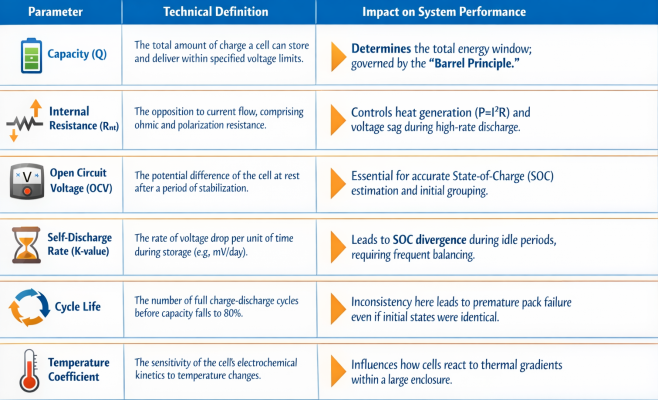
Risks arising from inconsistency
1. Shortened Lifespan: The lifespan of a battery pack depends on the cell with the shortest lifespan. It's very likely that the cell with the shortest lifespan is the one with the smallest capacity. Because smaller capacity cells are always fully charged and discharged, they are very likely to reach the end of their lifespan first. When one cell reaches the end of its lifespan, the entire group of cells soldered together also reaches the end of its lifespan. Through continuous charging and discharging, this difference will become increasingly significant until the battery pack becomes unusable.
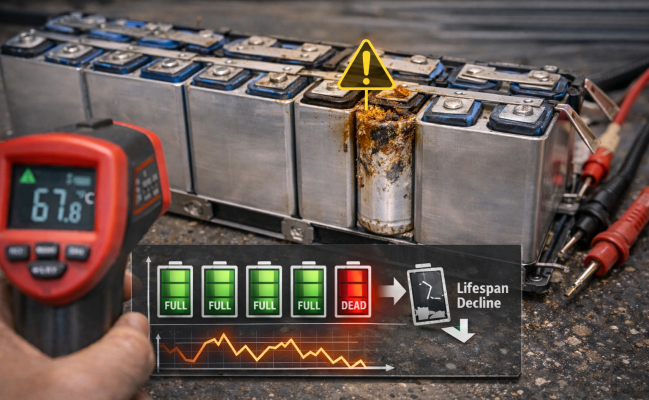
The lifespan of the entire battery pack is our ultimate focus on consistency. The goal of pursuing consistency is not only to maximize the battery pack's capabilities (including maximum power, maximum current, and maximum usable capacity) under the current conditions, but also to maintain these capabilities for as long as possible.
2. Capacity Loss: A battery module is composed of multiple individual cells, and its capacity follows the "barrel principle," where the capacity of the weakest cell determines the overall capacity of the battery pack. To prevent overcharging and over-discharging, the battery management system will: during discharge, stop discharging the entire battery pack when the lowest individual cell voltage reaches the discharge cutoff voltage; during charging, stop charging when the highest individual cell voltage reaches the charging cutoff voltage.
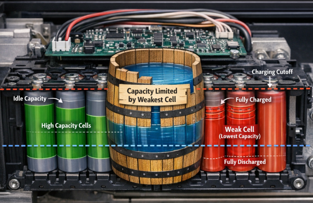
Small-capacity cells will always be fully charged and discharged, while large capacity cells will always use only part of their capacity. This will result in a portion of the entire battery pack's capacity being idle, affecting the utilization rate of the energy storage power station's capacity.
3. Increased Internal Resistance: Resistance refers to the resistance encountered by the current flowing through the inside of a lithium battery during operation. Cell internal resistance is a crucial parameter for evaluating lithium-ion power performance and battery lifespan, the higher the internal resistance, the worse the battery's rate performance. Inconsistent internal resistance in individual cells leads to inconsistent voltages across the batteries. This creates a negative feedback loop between internal resistance and temperature rise, accelerating the degradation of high-resistance cells. Higher internal resistance also increases the resistance to the migration and reactions of electrons and ions within the internal circuitry, resulting in increased polarization.
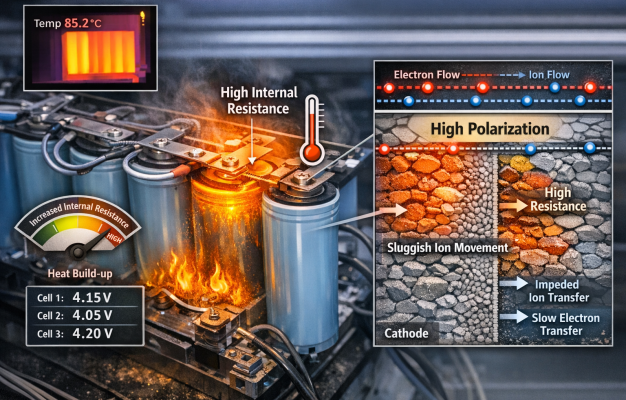
4. Thermal runaway: Uneven spatial distribution of heat generation and dissipation among individual cells in a battery pack can cause temperature inconsistencies within the battery itself, parts of the battery pack, and the surrounding environment. Increased temperature accelerates decomposition, leading to further increases in battery temperature, creating a vicious cycle. Excessive temperature can cause the negative electrode SEI film within the battery cell to decompose, followed by the decomposition and melting of the separator.
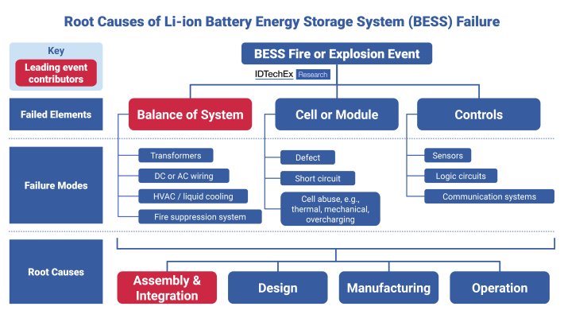
This causes a reaction between the negative electrode and the electrolyte, which in turn leads to the decomposition of the positive electrode and the electrolyte, resulting in a large-scale internal short circuit. This causes electrolyte combustion, which then spreads to other cells, causing severe thermal runaway and potentially leading to spontaneous combustion of the entire battery pack. Thermal runaway is a major focus of research on improving the safety of lithium-ion batteries.
Consistency Problem Solutions
The power grid has strict standards for the power response speed and voltage stability of energy storage systems. Battery packs with poor consistency may experience uneven voltage and power output among individual cells during charging and discharging, leading to system response lag, excessive voltage fluctuations, and failure to pass grid connection certification. In more serious cases, power fluctuations can cause grid frequency oscillations or even trigger grid disconnection protection, and the company will face regulatory penalties.
As global grid-side energy storage connection standards become increasingly stringent, China, the European Union, and other regions have successively issued new regulations, incorporating consistency control into the mandatory requirements for grid connection, preventing non-compliant products from entering the market. Therefore, controlling consistency issues has become a crucial challenge for all relevant manufacturers.
Firstly, starting from the source of manufacturing, the differences between individual battery cells are minimized. For example, CATL uses "submicron-level intelligent winding + AI cloud-edge-end defect detection" technology in the electrode process, setting up more than 3,000 quality control points to achieve CPK≥2.0 and reduce the defect rate to the ppb level of 9σ; SVOLT achieves a cell length error of ≤±0.2 mm and an electrode alignment of 99.5% through ultra-high speed stacking + online monitoring of the SVOLT cloud platform, and the single cell capacity difference of its 280Ah battery cell products is ≤1 Ah.
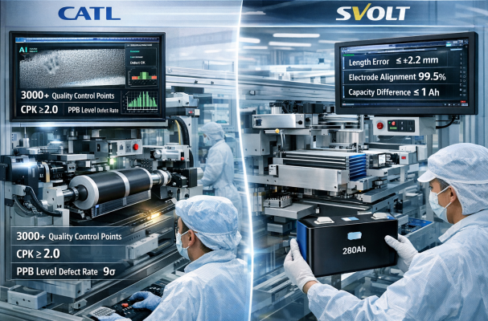
Secondly, during the group selection and matching stage, algorithms are used to improve the level of consistency control. For example, Wuhan EVE Energy Storage uses the pulse boundary method, first conducting "pulse charge and discharge" tests on sample cells to obtain boundary parameters and establish a consistency benchmark library; the cells to be tested can be benchmarked within 5 minutes, improving sorting efficiency by 3 times, and after grouping, ΔUmax≤20 mV; Anhui Jiyuan Software uses a machine learning prediction model, inputting three-dimensional historical data of "temperature-ΔSOC-capacity decay", to predict the capacity loss of the entire pack in real time, and screen out cells that may become the bottleneck in the future in advance, with a grouping mismatch rate of <1%.
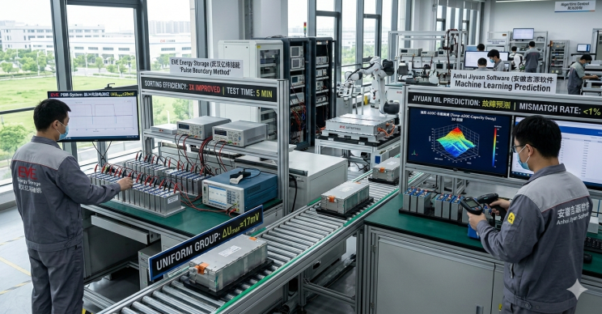
Third, after the cells are assembled, online correction is performed using power electronics technology and data algorithms to suppress consistency issues and extend battery life. For example, Kele Technology adopts a bidirectional DC DC 2A/5A chip-level solution to realize energy transfer within the series module. In 24 hours, it can reduce ΔUmax from 80mV to less than 15mV, increasing the system's usable capacity by 20%. Taihu Energy Valley achieves self-balancing at the body level by connecting the electrolyte chambers of adjacent cells and utilizing electrolyte ion diffusion.
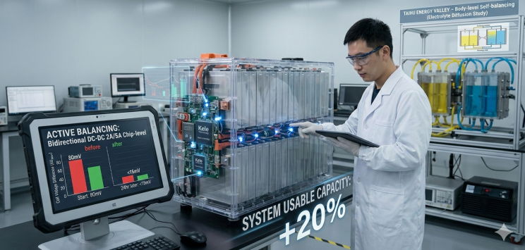
The balancing current can reach 0.1C, and the theoretical lifespan is increased by 30%. Trina Energy Storage adopts its own patented "precise charging" technology. It first discharges the entire battery pack to the cutoff voltage, and after standing for 0.5 hours, it performs millisecond-level pulse charging on the lagging cells. The charging error is <0.5% which can avoid the bulging problem caused by overcharging.
Moreover, the algorithm will learn the historical charging curves, and the accuracy will gradually improve. Sungrow adopts a string scheme, with each cluster equipped with an independent PCS (energy storage converter). It does not connect to the DC bus in parallel, completely eliminating circulating current and achieving a cluster-level temperature difference of <3C. The charging current deviation is reduced from 42% to less than 5%.
Furthermore, predictive maintenance can also aid in consistency management. For example, the "joint entropy" algorithm uses voltage time series to calculate the joint entropy between batteries, quantifying the trend of collaborative degradation; the threshold is dynamically adjusted with the number of cycles, and it can run on MCUs, providing early warning of consistency exceedance issues 30 days in advance.
Advanced Solutions for High-Quality Development
Addressing the challenge of consistency requires a multi-pronged strategy that spans advanced manufacturing, intelligent management, and sophisticated thermal control.
Smart Manufacturing and Digital Twins
The industry is moving toward "Battery 4.0," where data-driven manufacturing minimizes human error and process variance.
- Digital Twins (DT): By creating a virtual replica of the entire production line, manufacturers can simulate the impact of different process parameters on cell consistency. A digital twin integrates real-time sensing from the factory floor with physics-based models to predict cell quality before the production is complete. For example, DTs are used to optimize the movement of cells through formation and aging chambers, ensuring that every cell experiences the exact same thermal and electrical conditions.
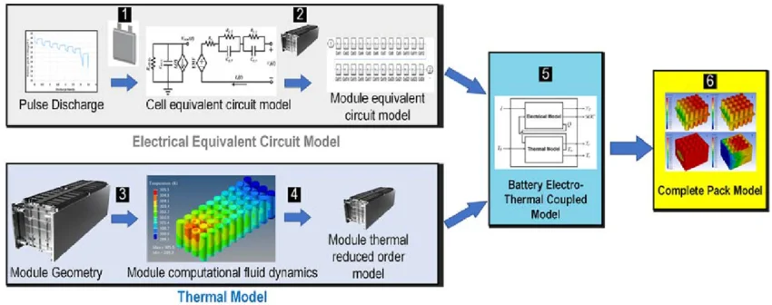
- AI and Big Data: AI algorithms are now deployed to monitor electrode coating thickness in real-time. By analyzing thousands of data points per second, these systems can adjust the coating head or the speed of the line to maintain uniformity within microns. Reports indicate that AI-driven parameter optimization can reduce defect rates across production batches by nearly 49%.
- Traceability and the Battery Passport: High-quality development relies on end-to-end traceability. The Battery Passport concept creates a digital record of a battery's entire lifecycle, from the source of the raw materials to its performance during its first and second lives. This ensures that any inconsistency discovered in the field can be traced back to its root cause in the manufacturing process, allowing for continuous quality improvement.

Advanced BMS and Equalization Technology
The Battery Management System (BMS) is the first line of defense against operational inconsistency. The core functionality is cell equalization, which seeks to bring all cells in a series string to a common SOC.
- Passive Balancing: This traditional method uses resistors to bleed off excess energy from cells with higher voltage. It is simple and inexpensive but inefficient, as it converts valuable stored energy into heat. For massive energy storage systems, the heat generated by passive balancing can place an additional burden on the cooling system.

- Active Balancing: This intelligent approach uses DC-DC converters, capacitors, or inductors to redistribute energy from stronger cells to weaker ones. Unlike passive balancing, active balancing can achieve 90-95% efficiency and can operate during both charge and discharge. This is particularly critical for energy storage applications where maximizing the round-trip efficiency (RTE) is a key performance indicator.
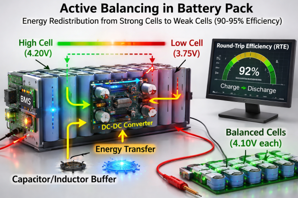
- AI-Driven Diagnostics: Modern BMS units are increasingly integrated with cloud-edge computing. By deploying deep learning models (like LSTM or CNN), the BMS can predict the SOH and Remaining Useful Life (RUL) of individual cells based on field data. This allows for predictive maintenance, where a cell that shows signs of becoming a short board can be replaced or recalibrated before it affects the entire system.
Regulatory Standards and Policy Support
High-quality development is underpinned by a robust framework of standards that establish clear benchmarks for consistency and safety.
- GB/T 36276-2023: This Chinese national standard is one of the most comprehensive in the world for energy storage. The 2023 revision raised the energy efficiency requirement for battery cells from 85% to 90% and intensified mechanical safety tests, such as increasing the crush force from 13kN to 50kN. This forces manufacturers to use high-consistency, high-durability cells to achieve certification.
- IEC 62619 and UL 9540: These international standards focus on the safety of lithium-ion systems in stationary applications. They include rigorous tests for thermal runaway propagation, ensuring that the failure of a single inconsistent cell does not lead to the destruction of the entire container.
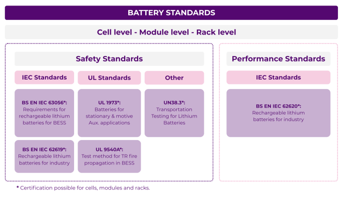
- IEEE 1547: This standard governs the interconnection of energy storage with the electrical grid. It ensures that BESS units operate consistently across different grid conditions, providing stable frequency and voltage support without introducing harmonics or instability.
Conclusion
With the trend towards long-term operation of grid-side energy storage, battery consistency is no longer an optimization that can be improved; rather, it is a crucial factor determining whether a product can survive in the market and whether a company can achieve profitability. Consistency control has become a core competitive advantage for companies, and in the future, only companies that master the full-chain technology capabilities will be able to gain an advantage in the energy storage and power battery market.